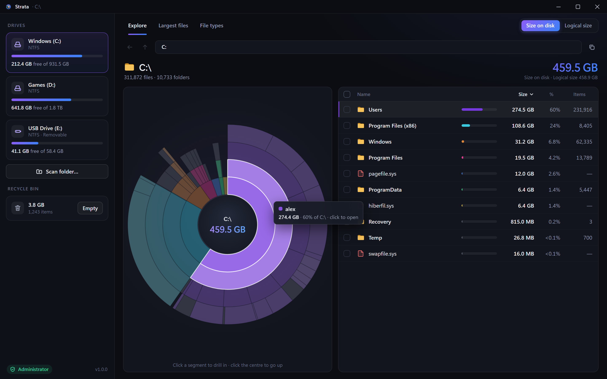
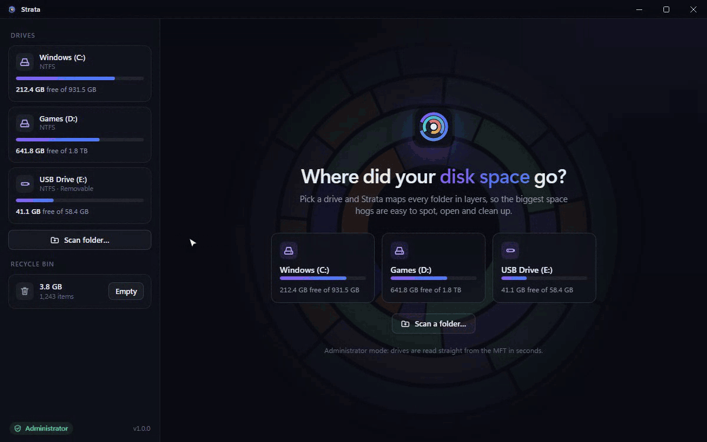
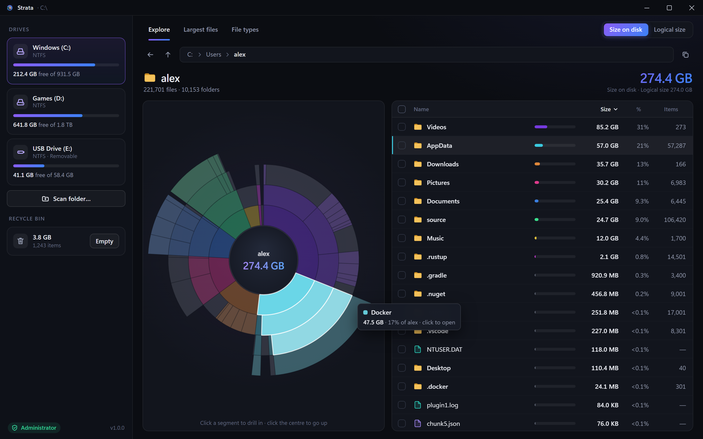
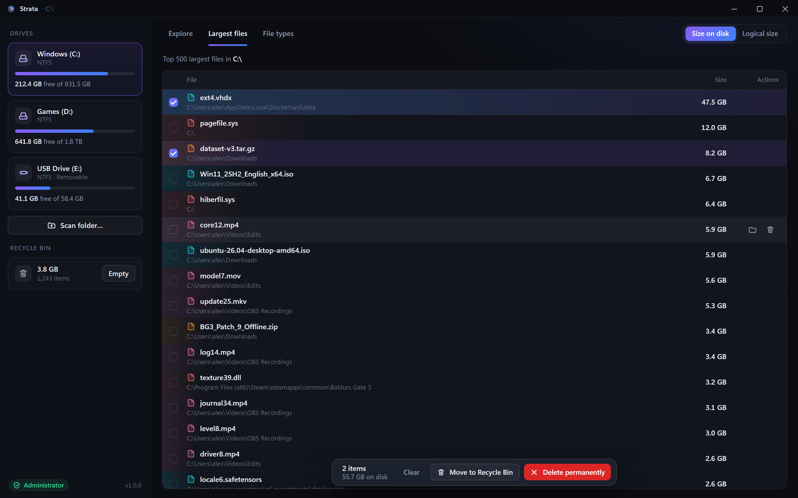
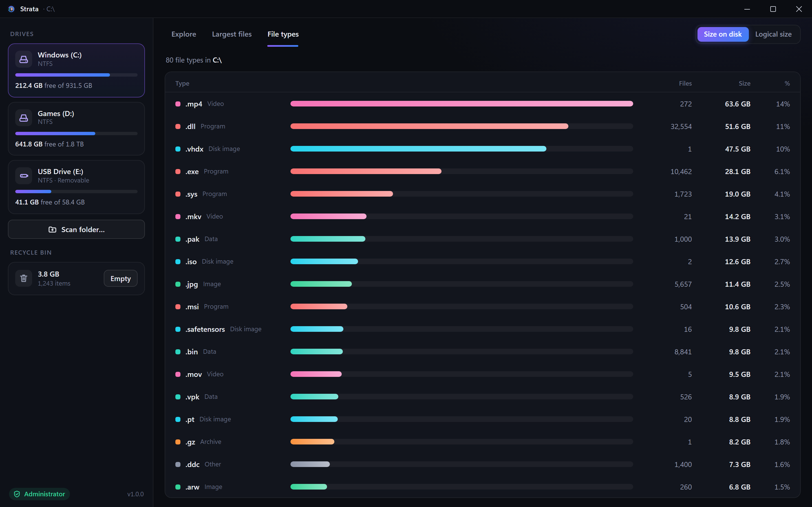
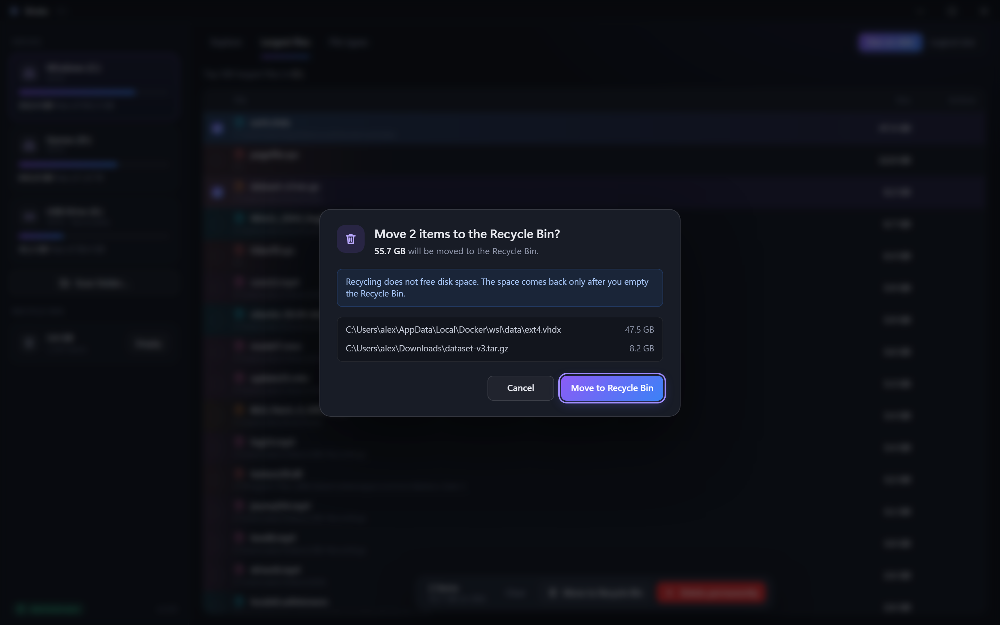

MFT-speed scanning
Reads the NTFS Master File Table directly. Millions of files are indexed in a few seconds instead of minutes.
Strata maps an entire drive by reading the NTFS Master File Table directly, then turns it into an interactive sunburst you can explore, clean up and trust.
Windows 10/11 x64 · ~1.5 MB installer · no telemetry

Reads the NTFS Master File Table directly. Millions of files are indexed in a few seconds instead of minutes.
Hover to see sizes, click to drill in, click the centre to go back. Rings are coloured by top-level folder so patterns pop out.
Jump straight to the 500 biggest files, or see which extensions eat your drive, with counts and sizes.
Moves to the Recycle Bin by default. System paths are protected, and every delete asks for confirmation first.
Toggle between allocated clusters and logical size to understand why a folder weighs what it does.
No elevation? Strata falls back to a parallel folder walk. Restart as admin whenever you want the instant scan.
Most disk analyzers open every folder and ask Windows about each file, one directory at a time. That is millions of small system calls.
Strata instead reads the Master File Table, the index NTFS already keeps of every file, with parallel 16 MiB unbuffered reads. It rebuilds the whole folder tree in memory from that single stream, and your NVMe drive does the rest.
A dark, fast, Windows 11 style interface. Every view stays smooth, even in folders with 100,000 entries.





Reading the Master File Table means opening the raw volume, which Windows only allows for administrators. Without admin, Strata still works: it falls back to a parallel folder walk, which is slower but needs no special rights. You can restart as admin from the sidebar at any time.
Strata only reads your disk until you choose to delete something. Deleting always asks for confirmation, defaults to the Recycle Bin, and refuses protected system locations. It never uploads anything and has no telemetry. The code is MIT licensed and public, so you can check.
The installer is not code-signed yet, so SmartScreen flags it as unrecognised. Click More info, then Run anyway. You can also build it yourself from the source.
Windows 10 and Windows 11, 64-bit (x64) only. The instant MFT scan works on NTFS volumes; other file systems use the folder walk.